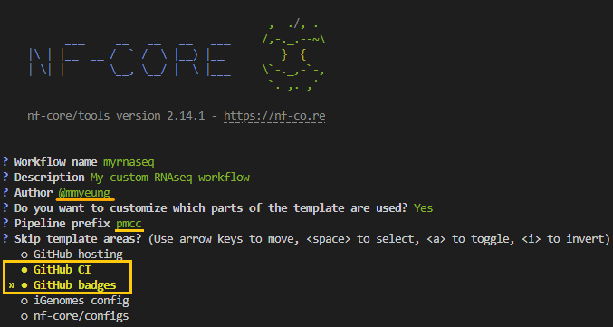
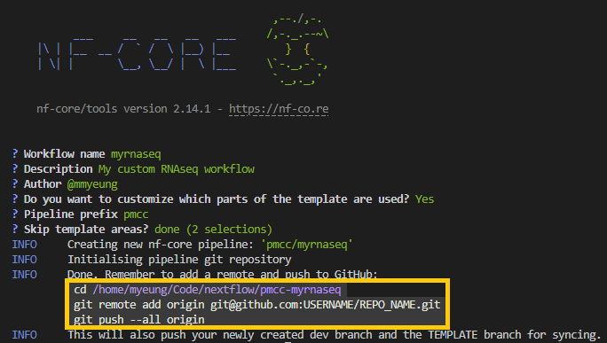

Nextflow Development - Developing Modularised Workflows
- Develop a basic Nextflow workflow with nf-core templates
- Test and set up profiles for a Nextflow workflow
- Create conditional processes, and conditional scripts within a processs
- Read data of different types into a Nextflow workflow
Environment Setup
Set up an interactive shell to run our Nextflow workflow:
srun --pty -p prod_short --mem 8GB --mincpus 2 -t 0-2:00 bashLoad the required modules to run Nextflow:
module load nextflow/23.04.1
module load singularity/3.7.3Set the singularity cache environment variable:
export NXF_SINGULARITY_CACHEDIR=/config/binaries/singularity/containers_devel/nextflowSingularity images downloaded by workflow executions will now be stored in this directory.
You may want to include these, or other environmental variables, in your .bashrc file (or alternate) that is loaded when you log in so you don’t need to export variables every session. A complete list of environment variables can be found here.
Set up a python virtual environment with nf-core/tools installed:
module load python/3.11.2
python -m venv /scratch/users/${USER}/nfcorevenv
source /scratch/users/${USER}/nfcorevenv/bin/activate
pip install nf-core==2.14.15. Nf-core
nf-core is a community effort to collect a curated set of analysis workflows built using Nextflow.
nf-core provides a standardized set of best practices, guidelines, and templates for building and sharing bioinformatics workflows. These workflows are designed to be modular, scalable, and portable, allowing researchers to easily adapt and execute them using their own data and compute resources.
The community is a diverse group of bioinformaticians, developers, and researchers from around the world who collaborate on developing and maintaining a growing collection of high-quality workflows. These workflows cover a range of applications, including transcriptomics, proteomics, and metagenomics.
One of the key benefits of nf-core is that it promotes open development, testing, and peer review, ensuring that the workflows are robust, well-documented, and validated against real-world datasets. This helps to increase the reliability and reproducibility of bioinformatics analyses and ultimately enables researchers to accelerate their scientific discoveries.
nf-core is published in Nature Biotechnology: Nat Biotechnol 38, 276–278 (2020). Nature Biotechnology
Key Features of nf-core workflows
- Documentation
- nf-core workflows have extensive documentation covering installation, usage, and description of output files to ensure that you won’t be left in the dark.
- Stable Releases
- nf-core workflows use GitHub releases to tag stable versions of the code and software, making workflow runs totally reproducible.
- Packaged software
- Pipeline dependencies are automatically downloaded and handled using Docker, Singularity, Conda, or other software management tools. There is no need for any software installations.
- Portable and reproducible
- nf-core workflows follow best practices to ensure maximum portability and reproducibility. The large community makes the workflows exceptionally well-tested and easy to execute.
- Cloud-ready
- nf-core workflows are tested on AWS
5.1 Nf-core tools
nf-core-tools is a python package with helper tools for the nf-core community.
These helper tools can be used for both building and running nf-core workflows.
Today we will be focusing on the developer commands to build a workflow using nf-core templates and structures.
Take a look at what is within with nf-core-tools suite
nf-core -h ,--./,-.
___ __ __ __ ___ /,-._.--~\
|\ | |__ __ / ` / \ |__) |__ } {
| \| | \__, \__/ | \ |___ \`-._,-`-,
`._,._,'
nf-core/tools version 2.14.1 - https://nf-co.re
Usage: nf-core [OPTIONS] COMMAND [ARGS]...
nf-core/tools provides a set of helper tools for use with nf-core Nextflow pipelines.
It is designed for both end-users running pipelines and also developers creating new pipelines.
╭─ Options ────────────────────────────────────────────────────────────────────────────────────────╮
│ --version Show the version and exit. │
│ --verbose -v Print verbose output to the console. │
│ --hide-progress Don't show progress bars. │
│ --log-file -l <filename> Save a verbose log to a file. │
│ --help -h Show this message and exit. │
╰──────────────────────────────────────────────────────────────────────────────────────────────────╯
╭─ Commands for users ─────────────────────────────────────────────────────────────────────────────╮
│ list List available nf-core pipelines with local info. │
│ launch Launch a pipeline using a web GUI or command line prompts. │
│ create-params-file Build a parameter file for a pipeline. │
│ download Download a pipeline, nf-core/configs and pipeline singularity images. │
│ licences List software licences for a given workflow (DSL1 only). │
│ tui Open Textual TUI. │
╰──────────────────────────────────────────────────────────────────────────────────────────────────╯
╭─ Commands for developers ────────────────────────────────────────────────────────────────────────╮
│ create Create a new pipeline using the nf-core template. │
│ lint Check pipeline code against nf-core guidelines. │
│ modules Commands to manage Nextflow DSL2 modules (tool wrappers). │
│ subworkflows Commands to manage Nextflow DSL2 subworkflows (tool wrappers). │
│ schema Suite of tools for developers to manage pipeline schema. │
│ create-logo Generate a logo with the nf-core logo template. │
│ bump-version Update nf-core pipeline version number. │
│ sync Sync a pipeline TEMPLATE branch with the nf-core template. │
╰──────────────────────────────────────────────────────────────────────────────────────────────────╯Today we will be predominately focusing on most of the tools for developers.
5.2 Nf-core Pipeline
Let’s review the structure of the nf-core/rnaseq pipeline.
Almost all of the structure provided here is from the nf-core templates. As we briefly covered last week in Developing Modularised Workflows, it is good practice to separate your workflow from subworkflows and modules. As this allows you to modularise your workflows and reuse modules.
Nf-core assists in enforcing this structure with the subfolders:
workflows- contains the main workflowsubworkflows- contains subworkflows either as written by the nf-core community or self-writtenmodules- contains modules either as written by the nf-core community or self-written
In our Introduction to Nextflow and running nf-core workflows workshop in Customising & running nf-core pipelines, we briefly touched on configuration files in the conf/ folder and nextflow.config.
Today we will be working on files in these locations and expanding our use of the nf-core template to include:
- files in the
assetsfolder nextflow_schema.json
5.2.1 nf-core create
The create subcommand makes a new pipeline using the nf-core base template. With a given pipeline name, description and author, it makes a starter pipeline which follows nf-core best practices.
After creating the files, the command initialises the folder as a git repository and makes an initial commit. This first “vanilla” commit which is identical to the output from the templating tool is important, as it allows us to keep your pipeline in sync with the base template in the future. See the nf-core syncing docs for more information.
Let’s set up the nf-core template for today’s workshop:
nf-core createAs we progress through the interactive prompts, we will use the following values below: 
Remember to swap out the Author name with your own!
The creates a pipeline called myrnaseq in the directory pmcc-myrnaseq (<prefix>-<name>) with mmyeung as the author. If selected exclude the following:
github: removed all files required for GitHub hosting of the pipeline. Specifically, the.githubfolder and.gitignorefile.ci: removes the GitHub continuous integration tests from the pipeline. Specifically, the.github/workflows/folder.github_badges: removes GitHub badges from theREADME.mdfile.igenomes: removes pipeline options related to iGenomes. Including theconf/igenomes.configfile and all references to it.nf_core_configs: excludesnf_core/configsrepository options, which make multiple config profiles for various institutional clusters available.
To run the pipeline creation silently (i.e. without any prompts) with the nf-core template, you can use the --plain option.
Typically, we would use your github username as the value here, this allows an extra layer of traceability.
Remember we are currently only making the most of the nf-core templates and not contributing back to nf-core. As such, we should not use the nf-core prefix to our pipeline.
Note that the highlighted values under Skip template areas? are the sections that will be skipped. As this is a test pipeline we are skipping the set up of github CI and badges
As we have requested GitHub hosting, on completion of the command, you will note there are suggested github commands included in the output. Use these commands to push the commits from your computer. You can then continue to edit, commit and push normally as you build your pipeline.

nf-core template
Let’s see what has been minimally provided by nf-core create
ll pmcc-myrnaseq/total 47
drwxrwxr-x 2 myeung myeung 4096 Jun 11 15:00 assets
-rw-rw-r-- 1 myeung myeung 372 Jun 11 15:00 CHANGELOG.md
-rw-rw-r-- 1 myeung myeung 2729 Jun 11 15:00 CITATIONS.md
drwxrwxr-x 2 myeung myeung 4096 Jun 11 15:00 conf
drwxrwxr-x 3 myeung myeung 4096 Jun 11 15:00 docs
-rw-rw-r-- 1 myeung myeung 1060 Jun 11 15:00 LICENSE
-rw-rw-r-- 1 myeung myeung 3108 Jun 11 15:00 main.nf
drwxrwxr-x 3 myeung myeung 4096 Jun 11 15:00 modules
-rw-rw-r-- 1 myeung myeung 1561 Jun 11 15:00 modules.json
-rw-rw-r-- 1 myeung myeung 9982 Jun 11 15:00 nextflow.config
-rw-rw-r-- 1 myeung myeung 16657 Jun 11 15:00 nextflow_schema.json
-rw-rw-r-- 1 myeung myeung 3843 Jun 11 15:00 README.md
drwxrwxr-x 4 myeung myeung 4096 Jun 11 15:00 subworkflows
-rw-rw-r-- 1 myeung myeung 165 Jun 11 15:00 tower.yml
drwxrwxr-x 2 myeung myeung 4096 Jun 11 15:00 workflowsAs you take look through the files created you will see many comments through the files starting with // TODO nf-core. These are pointers from nf-core towards areas of the pipeline that you may be intersted in changing.
They are also the “key word” used by the nf-core lint.
Alternative setups for nf-core create
Aside from the interactive setup we have just completed for nf-core create, there are two alternative methods.
- Provide the option using the optional flags from
nf-core create - Provide a
template.yamlvia the--template-yamloption
Create a second pipeline template using the optional flags with the name “myworkflow”, provide a description, author name and set the version to “0.0.1”
What options are still you still prompted for?
Run the following:
nf-core create --name myworkflow --description "my workflow test" --author "@mmyeung" --version "0.0.1"Note that you are still prompted for any additional customisations such as the pipeline prefix and steps to skip
Create another pipeline template using a yaml file called mytemplate.yaml
Hint: the key values in the yaml should be name, description, author, prefix and skip
Set the pipeline to skip ci, igenomes and nf_core_configs
Run the following:
vim mytemplate.yamlValues in mytemplate.yaml
name: coolpipe
description: A cool pipeline
author: me
prefix: myorg
skip:
- ci
- igenomes
- nf_core_configsnf-core create --template-yaml mytemplate.yaml5.3 Test Profile
nf-core tries to encourage software engineering concepts such as minimal test sets, this can be set up using the conf/test.config and conf/test_full.config
For the duration of this workshop we will be making use of the conf/test.config, to test our pipeline.
Let’s take a look at what is currently in the conf/test.config.
cat pmcc-myrnaseq/conf/test.config/*
~~~~~~~~~~~~~~~~~~~~~~~~~~~~~~~~~~~~~~~~~~~~~~~~~~~~~~~~~~~~~~~~~~~~~~~~~~~~~~~~~~~~~~~~
Nextflow config file for running minimal tests
~~~~~~~~~~~~~~~~~~~~~~~~~~~~~~~~~~~~~~~~~~~~~~~~~~~~~~~~~~~~~~~~~~~~~~~~~~~~~~~~~~~~~~~~
Defines input files and everything required to run a fast and simple pipeline test.
Use as follows:
nextflow run pmcc/myrnaseq -profile test,<docker/singularity> --outdir <OUTDIR>
----------------------------------------------------------------------------------------
*/
params {
config_profile_name = 'Test profile'
config_profile_description = 'Minimal test dataset to check pipeline function'
// Limit resources so that this can run on GitHub Actions
max_cpus = 2
max_memory = '6.GB'
max_time = '6.h'
// Input data
// TODO nf-core: Specify the paths to your test data on nf-core/test-datasets
// TODO nf-core: Give any required params for the test so that command line flags are not needed
input = params.pipelines_testdata_base_path + 'viralrecon/samplesheet/samplesheet_test_illumina_amplicon.csv'
// Genome references
genome = 'R64-1-1'
}From this, we can see that this config uses the params scope to define:
- Maximal values for resources
- Directs the
inputparameter to a sample sheet hosted in thenf-core/testdatagithub - Sets the genome to “R64-1-1”
genome set all the genome references?
This is possible due to us using the igenomes configs from nf-core.
You can see in the conf/igenomes.config how nested within each genome definition are paths to various reference files.
To find out more about the igenomes project here
For the duration of this workshop we are going to use the data from nf-training that was cloned in the first workshop. We are also going to update our test.config to contain the igenomes_base parameter, as we have a local cache on the cluster.
input = "/home/Shared/For_NF_Workshop/training/nf-training/data/ggal/samplesheet.csv"
outdir = "/scratch/users/${USER}/myrnaseqtest"
// genome references
genome = "GRCh38"
igenomes_base = "/data/janis/nextflow/references/genomes/ngi-igenomes"Also, we will need to change the value, custom_config_base to null, in nextflow.config
custom_config_base = nullLet’s quickly check that our pipeline runs with the test profile.
cd ..
nextflow run ./pmcc-myrnaseq -profile test,singularitytest.config and the test_full.config
Typically the test.config contains the minimal test example, while the test_full.config contains at least one full sized example data.
5.4 Nf-core modules
You can find all the nf-core modules that have been accepted and peer-tested by the community in nf-core modules.
or with
nf-core modules list remoteyou can check which modules are installed localling in your pipeline by running nf-core modules list local, within the pipeline folder.
cd pmcc-myrnaseq
nf-core modules list local
,--./,-.
___ __ __ __ ___ /,-._.--~\
|\ | |__ __ / ` / \ |__) |__ } {
| \| | \__, \__/ | \ |___ \`-._,-`-,
`._,._,'
nf-core/tools version 2.14.1 - https://nf-co.re
INFO Repository type: pipeline
INFO Modules installed in '.':
┏━━━━━━━━━━━━━┳━━━━━━━━━━━━━━━━━┳━━━━━━━━━━━━━┳━━━━━━━━━━━━━━━━━━━━━━━━━━━━━━━━━━━━━━┳━━━━━━━━━━━━┓
┃ Module Name ┃ Repository ┃ Version SHA ┃ Message ┃ Date ┃
┡━━━━━━━━━━━━━╇━━━━━━━━━━━━━━━━━╇━━━━━━━━━━━━━╇━━━━━━━━━━━━━━━━━━━━━━━━━━━━━━━━━━━━━━╇━━━━━━━━━━━━┩
│ fastqc │ nf-core/modules │ 285a505 │ Fix FastQC memory allocation (#5432) │ 2024-04-05 │
│ multiqc │ nf-core/modules │ b7ebe95 │ Update MQC container (#5006) │ 2024-02-29 │
└─────────────┴─────────────────┴─────────────┴──────────────────────────────────────┴────────────┘We are going to replicate sections of the workflow from last week.
FASTQC -> Trimgalore -> FASTQC -> MULTIQC
5.3.1 Installing nf-core modules
The general format for installing modules is as below.
nf-core modules install <tool>/<subcommand>Note that if you search for the modules on the nf-core modules website, you can find the install command at the top of the tool
Remember to run the install commands from within the nf-core pipeline folder (in this case the pmcc-myrnaseq folder)
If you are not in an nf-core folder you will see the following error
,--./,-.
___ __ __ __ ___ /,-._.--~\
|\ | |__ __ / ` / \ |__) |__ } {
| \| | \__, \__/ | \ |___ \`-._,-`-,
`._,._,'
nf-core/tools version 2.14.1 - https://nf-co.re
WARNING 'repository_type' not defined in .nf-core.yml
? Is this repository an nf-core pipeline or a fork of nf-core/modules? (Use arrow keys)
» Pipeline
nf-core/modulesInstall the following nf-core modules
- trimgalore
- salmon quant
- fastqc
What happens when we try to install the fastqc module?
Unfortunately, nf-core does not allow the installation of multiple modules in one line therefore we mush provide the commands separately for each module.
nf-core modules install trimgalore
nf-core modules install salmon/quant
nf-core modules install fastqcNote that from above, when we checked which modules have been installed locally in our pipeline, fastqc was already installed. As such, we see the following output warning us that fastqc is installed and we can either force the reinstallation or we can update the module
,--./,-.
___ __ __ __ ___ /,-._.--~\
|\ | |__ __ / ` / \ |__) |__ } {
| \| | \__, \__/ | \ |___ \`-._,-`-,
`._,._,'
nf-core/tools version 2.14.1 - https://nf-co.re
INFO Module 'fastqc' is already installed.
INFO To update 'fastqc' run 'nf-core modules update fastqc'. To force reinstallation use '--force'. Can you think of a way to streamline the installation of modules?
following the installation what files changed, check with
git statusOn branch master
Changes not staged for commit:
(use "git add <file>..." to update what will be committed)
(use "git restore <file>..." to discard changes in working directory)
modified: modules.json
Untracked files:
(use "git add <file>..." to include in what will be committed)
modules/nf-core/salmon/
modules/nf-core/trimgalore/
no changes added to commit (use "git add" and/or "git commit -a")modules.json is a running record of the modules installed and should be included in your pipeline. Note: you can find the github SHA for the exact “version” of the module installed.
This insulates your pipeline from when a module is deleted.
rm -r modules/nf-core/salmon/quant
nf-core modules list local
,--./,-.
___ __ __ __ ___ /,-._.--~\
|\ | |__ __ / ` / \ |__) |__ } {
| \| | \__, \__/ | \ |___ \`-._,-`-,
`._,._,'
nf-core/tools version 2.14.1 - https://nf-co.re
INFO Repository type: pipeline
INFO Reinstalling modules found in 'modules.json' but missing from directory: 'modules/nf-core/salmon/quant'
INFO Modules installed in '.':
┏━━━━━━━━━━━━━━┳━━━━━━━━━━━━━━━━━┳━━━━━━━━━━━━━┳━━━━━━━━━━━━━━━━━━━━━━━━━━━━━━━━━━━━━━━━┳━━━━━━━━━━━━┓
┃ Module Name ┃ Repository ┃ Version SHA ┃ Message ┃ Date ┃
┡━━━━━━━━━━━━━━╇━━━━━━━━━━━━━━━━━╇━━━━━━━━━━━━━╇━━━━━━━━━━━━━━━━━━━━━━━━━━━━━━━━━━━━━━━━╇━━━━━━━━━━━━┩
│ fastqc │ nf-core/modules │ 285a505 │ Fix FastQC memory allocation (#5432) │ 2024-04-05 │
│ multiqc │ nf-core/modules │ b7ebe95 │ Update MQC container (#5006) │ 2024-02-29 │
│ salmon/quant │ nf-core/modules │ cb6b2b9 │ fix stubs salmon (#5517) │ 2024-04-24 │
│ trimgalore │ nf-core/modules │ a984184 │ run nf-core lint on trimgalore (#5129) │ 2024-03-15 │
└──────────────┴─────────────────┴─────────────┴────────────────────────────────────────┴────────────┘How would you look up previous versions of the module?
There are a few ways to approach this.
- You could hop onto github and search throught the git history for the
main.nfof the particular module, to identify the git SHA and provide it to the--shaflag. - You could run the install command with the
--promptflag, as seen below
,--./,-.
___ __ __ __ ___ /,-._.--~\
|\ | |__ __ / ` / \ |__) |__ } {
| \| | \__, \__/ | \ |___ \`-._,-`-,
`._,._,'
nf-core/tools version 2.14.1 - https://nf-co.re
INFO Module 'fastqc' is already installed.
? Module fastqc is already installed.
Do you want to force the reinstallation? Yes
? Select 'fastqc' commit: (Use arrow keys)
Fix FastQC memory allocation (#5432) 285a50500f9e02578d90b3ce6382ea3c30216acd (installed version)
Update FASTQC to use unique names for snapshots (#4825) f4ae1d942bd50c5c0b9bd2de1393ce38315ba57c
CHORES: update fasqc tests with new data organisation (#4760) c9488585ce7bd35ccd2a30faa2371454c8112fb9
fix fastqc tests n snap (#4669) 617777a807a1770f73deb38c80004bac06807eef
Update version strings (#4556) 65ad3e0b9a4099592e1102e92e10455dc661cf53
Remove pytest-workflow tests for modules covered by nf-test (#4521) 3e8b0c1144ccf60b7848efbdc2be285ff20b49ee
Add conda environment names (#4327) 3f5420aa22e00bd030a2556dfdffc9e164ec0ec5
Fix conda declaration (#4252) 8fc1d24c710ebe1d5de0f2447ec9439fd3d9d66a
Move conda environment to yml (#4079) 516189e968feb4ebdd9921806988b4c12b4ac2dc
authors => maintainers (#4173) cfd937a668919d948f6fcbf4218e79de50c2f36f
» older commits5.3.2 Updating nf-core modules
Above we got and error message for fastq because the module was already installed. As listed in the output, one of the suggested solutions is that we might be looking to update the module
nf-core modules update fastqcAfter running the command you will find that you are prompted for whether you wish to view the differences between the current installation and the update.
,--./,-.
___ __ __ __ ___ /,-._.--~\
|\ | |__ __ / ` / \ |__) |__ } {
| \| | \__, \__/ | \ |___ \`-._,-`-,
`._,._,'
nf-core/tools version 2.14.1 - https://nf-co.re
? Do you want to view diffs of the proposed changes? (Use arrow keys)
» No previews, just update everything
Preview diff in terminal, choose whether to update files
Just write diffs to a patch fileFor the sake of this exercise, we are going to roll fastqc back by one commit.
If you select the 2nd option Preview diff in terminal, choose whether to update files
nf-core modules update fastqc -p ,--./,-.
___ __ __ __ ___ /,-._.--~\
|\ | |__ __ / ` / \ |__) |__ } {
| \| | \__, \__/ | \ |___ \`-._,-`-,
`._,._,'
nf-core/tools version 2.14.1 - https://nf-co.re
? Do you want to view diffs of the proposed changes? Preview diff in terminal, choose whether to update files
? Select 'fastqc' commit: (Use arrow keys)
Fix FastQC memory allocation (#5432) 285a50500f9e02578d90b3ce6382ea3c30216acd (installed version)
» Update FASTQC to use unique names for snapshots (#4825) f4ae1d942bd50c5c0b9bd2de1393ce38315ba57c
CHORES: update fasqc tests with new data organisation (#4760) c9488585ce7bd35ccd2a30faa2371454c8112fb9
fix fastqc tests n snap (#4669) 617777a807a1770f73deb38c80004bac06807eef
Update version strings (#4556) 65ad3e0b9a4099592e1102e92e10455dc661cf53
Remove pytest-workflow tests for modules covered by nf-test (#4521) 3e8b0c1144ccf60b7848efbdc2be285ff20b49ee
Add conda environment names (#4327) 3f5420aa22e00bd030a2556dfdffc9e164ec0ec5
Fix conda declaration (#4252) 8fc1d24c710ebe1d5de0f2447ec9439fd3d9d66a
Move conda environment to yml (#4079) 516189e968feb4ebdd9921806988b4c12b4ac2dc
authors => maintainers (#4173) cfd937a668919d948f6fcbf4218e79de50c2f36f
older commits? Select 'fastqc' commit: Update FASTQC to use unique names for snapshots (#4825) f4ae1d942bd50c5c0b9bd2de1393ce38315ba57c
INFO Changes in module 'nf-core/fastqc' between (285a50500f9e02578d90b3ce6382ea3c30216acd) and (f4ae1d942bd50c5c0b9bd2de1393ce38315ba57c)
INFO Changes in 'fastqc/main.nf':
--- modules/nf-core/fastqc/main.nf
+++ modules/nf-core/fastqc/main.nf
@@ -25,11 +25,6 @@
def old_new_pairs = reads instanceof Path || reads.size() == 1 ? [[ reads, "${prefix}.${reads.extension}" ]] : reads.withIndex().collect { entry, index -> [ entry, "${prefix}_${index + 1}.${entry.extension}" ] }
def rename_to = old_new_pairs*.join(' ').join(' ')
def renamed_files = old_new_pairs.collect{ old_name, new_name -> new_name }.join(' ')
-
- def memory_in_mb = MemoryUnit.of("${task.memory}").toUnit('MB')
- // FastQC memory value allowed range (100 - 10000)
- def fastqc_memory = memory_in_mb > 10000 ? 10000 : (memory_in_mb < 100 ? 100 : memory_in_mb)
-
"""
printf "%s %s\\n" $rename_to | while read old_name new_name; do
[ -f "\${new_name}" ] || ln -s \$old_name \$new_name
@@ -38,7 +33,6 @@
fastqc \\
$args \\
--threads $task.cpus \\
- --memory $fastqc_memory \\
$renamed_files
cat <<-END_VERSIONS > versions.yml
INFO 'modules/nf-core/fastqc/meta.yml' is unchanged
INFO 'modules/nf-core/fastqc/environment.yml' is unchanged
INFO 'modules/nf-core/fastqc/tests/main.nf.test.snap' is unchanged
INFO 'modules/nf-core/fastqc/tests/tags.yml' is unchanged
INFO 'modules/nf-core/fastqc/tests/main.nf.test' is unchanged
? Update module 'fastqc'? No
INFO Updates complete ✨ 5.3.3 Removing nf-core modules
As mentioned above, if you decide that you don’t need a module anymore, you can’t just remove the folder with rm -r.
For nf-core to no longer register the module is to be distributed with your pipeline you need to use:
nf-core modules removeAs an exercise, we are going to install the samtools/sort module
nf-core modules install samtools/sortQuickly view the modules.json or use nf-core modules list local to view the changes from installing the module.
Now remove the samtools/sort module
nf-core modules remove samtools/sortNow add the include module statements to the our workflows/myrnaseq.nf
include { FASTQC as FASTQC_one } from '../modules/nf-core/fastq/main'
include { FASTQC as FASTQC_two } from '../modules/nf-core/fastq/main'
include { TRIMGALORE } from '../modules/nf-core/trimgalore/main'5.3.4 Writing modules with nf-core template
For this section we are going to refer to the nf-core guidelines for modules.
While these are the full guidelines for contributing back to nf-core, there are still some general components that are good practice even if you are NOT planning to contribute.
- All required and optional input files must be included in the input as a
pathvariable - The command should run without any additional argument, any required flag values should be included as an input
valvariable task.ext.argsmust be provided as a variable- Where possible all input and output files should be compressed (i.e.
fastq.gzand.bam) - A
versions.ymlfile is output - Naming conventions include using all lowercase without puntuation and follows the convention of
software/tool(i.e.bwa/mem) - All outputs must include an
emitdefinition
We are going to write up our own samtools/view module.
nf-core modules create
,--./,-.
___ __ __ __ ___ /,-._.--~\
|\ | |__ __ / ` / \ |__) |__ } {
| \| | \__, \__/ | \ |___ \`-._,-`-,
`._,._,'
nf-core/tools version 2.14.1 - https://nf-co.re
INFO Repository type: pipeline
INFO Press enter to use default values (shown in brackets) or type your own responses. ctrl+click underlined text to open links.
Name of tool/subtool: samtools/view
INFO Using Bioconda package: 'bioconda::samtools=1.20'
INFO Could not find a Docker/Singularity container (Unexpected response code `500` for https://api.biocontainers.pro/ga4gh/trs/v2/tools/samtools/versions/samtools-1.20) ## Cluster
GitHub Username: (@author): @mmyeung
INFO Provide an appropriate resource label for the process, taken from the nf-core pipeline template.
For example: process_single, process_low, process_medium, process_high, process_long
? Process resource label: process_low
INFO Where applicable all sample-specific information e.g. 'id', 'single_end', 'read_group' MUST be provided as an input via a Groovy Map called
'meta'. This information may not be required in some instances, for example indexing reference genome files.
Will the module require a meta map of sample information? [y/n] (y): y
INFO Created component template: 'samtools/view'
INFO Created following files:
modules/local/samtools/view.nfAs we progressed through the interactive prompt, you will have noticed that nf-core always attempts to locate the corresponding bioconda package and singularity/Docker container.
bioconda package or container?
nf-core modules create --author @mmyeung --label process_single --meta testscriptThe command will indicate that the there is no bioconda package with the software name, and prompt you for a package name you might wish to use.
INFO Repository type: pipeline
INFO Press enter to use default values (shown in brackets) or type your own responses. ctrl+click underlined text to open links.
WARNING Could not find Conda dependency using the Anaconda API: 'testscript'
Do you want to enter a different Bioconda package name? [y/n]: n
WARNING Could not find Conda dependency using the Anaconda API: 'testscript'
Building module without tool software and meta, you will need to enter this information manually.
INFO Created component template: 'testscript'
INFO Created following files:
modules/local/testscript.nf within the module .nf script you will note that the definitions for the conda and container are incomplete for the tool.
conda "${moduleDir}/environment.yml"
container "${ workflow.containerEngine == 'singularity' && !task.ext.singularity_pull_docker_container ?
'https://depot.galaxyproject.org/singularity/YOUR-TOOL-HERE':
'biocontainers/YOUR-TOOL-HERE' }"nf-core has a large cache of containers here. Though you can also provide a simple path to docker hub.
container "mmyeung/trccustomunix:0.0.1"The resource labels, are those as defined in conf/base.config
Write up the inputs, outputs and script for samtools/view.
Assume that all the inputs will be .bam and the outputs will also be .bam.
For reference look at the documentation for samtools/view
Are there optional flags that take file inputs? What options need to set to ensure that the command runs without error?
process SAMTOOLS_VIEW {
tag "$meta.id"
label 'process_low'
conda "${moduleDir}/environment.yml"
container "${ workflow.containerEngine == 'singularity' && !task.ext.singularity_pull_docker_container ?
'https://depot.galaxyproject.org/singularity/samtools:1.20--h50ea8bc_0' :
'biocontainers/samtools:1.20--h50ea8bc_0' }"
input:
tuple val(meta), path(input), path(index)
tuple val(meta2), path(fasta)
path bed
path qname
output:
tuple val(meta), path("*.bam"), emit: bam
path "versions.yml", emit: versions
when:
task.ext.when == null || task.ext.when
script:
def args = task.ext.args ?: ''
def args2 = task.ext.args2 ?: ''
def prefix = task.ext.prefix ?: "${meta.id}"
def reference = fasta ? "--reference ${fasta}" : ""
def readnames = qname ? "--qname-file ${qname}": ""
def regions = bed ? "-L ${bed}": ""
if ("$input" == "${prefix}.${file_type}") error "Input and output names are the same, use \"task.ext.prefix\" to disambiguate!"
"""
samtools \\
view \\
-hb \\
--threads ${task.cpus-1} \\
${reference} \\
${readnames} \\
${regions} \\
$args \\
-o ${prefix}.bam \\
$input \\
$args2
cat <<-END_VERSIONS > versions.yml
"${task.process}":
samtools: \$(echo \$(samtools --version 2>&1) | sed 's/^.*samtools //; s/Using.*\$//')
END_VERSIONS
"""
stub:
def args = task.ext.args ?: ''
def prefix = task.ext.prefix ?: "${meta.id}"
def file_type = args.contains("--output-fmt sam") ? "sam" :
args.contains("--output-fmt bam") ? "bam" :
args.contains("--output-fmt cram") ? "cram" :
input.getExtension()
if ("$input" == "${prefix}.${file_type}") error "Input and output names are the same, use \"task.ext.prefix\" to disambiguate!"
def index = args.contains("--write-index") ? "touch ${prefix}.csi" : ""
"""
touch ${prefix}.${file_type}
${index}
cat <<-END_VERSIONS > versions.yml
"${task.process}":
samtools: \$(echo \$(samtools --version 2>&1) | sed 's/^.*samtools //; s/Using.*\$//')
END_VERSIONS
"""Similar to nf-core create you can minimise a the number of prompts by using optional flags.
Write up the short workflow as discussed above
FASTQC -> trimgalore -> FASTQC -> MULTIQC
5.4 Nf-core subworkflow
or with
nf-core subworkflows list remote5.4.1 Installing nf-core subworkflows
Subworkflows can be updated/removed like modules
Install the subworkflow fastq_subsample_fq_salmon into the workflow
nf-core subworkflows install fastq_subsample_fq_salmon5.4.2 Writing subworkflows with nf-core template
Write up the QC_WF subworkflow from last week.
5.5 Nf-core schema and input validation
Relies on plugins written by nf-core community
In particular nf-validation
nextflow_schmea.json is for pipeline parameters
nf-core schema build
,--./,-.
___ __ __ __ ___ /,-._.--~\
|\ | |__ __ / ` / \ |__) |__ } {
| \| | \__, \__/ | \ |___ \`-._,-`-,
`._,._,'
nf-core/tools version 2.14.1 - https://nf-co.re
INFO [✓] Default parameters match schema validation
INFO [✓] Pipeline schema looks valid (found 32 params)
INFO Writing schema with 32 params: 'nextflow_schema.json'
🚀 Launch web builder for customisation and editing? [y/n]: y
INFO Opening URL: https://nf-co.re/pipeline_schema_builder?id=1718112529_0841fa08f86f
INFO Waiting for form to be completed in the browser. Remember to click Finished when you're done.
⢿ Use ctrl+c to stop waiting and force exit.Recommend writing in web browser
json format details additional reading
We are going add the input parameter for the transcript.fa
Then install salmon/index and write up quant_wf subworkflow from last week.git
5.5.2 Nf-core inputs
nested in this schema is the input or samplesheet schema. unfortunately there isn’t a nice interface to help you write this schema yet.
meta: Allows you to predesignate the “key” with in the “meta”
required: value must be included
dependency: value is dependant on other value existing in samplesheet (i.e. fastq_2 must imply there is a fastq_1)
5.6 Nf-core tools for launching
create-params-file
5.7 Nf-core for pipeline management
bump-version ==> good software management to note down versions
Contributing to nf-core
Full pipelines Please see the nf-core documentation for a full walkthrough of how to create a new nf-core workflow. — This workshop is adapted from Fundamentals Training, Advanced Training, Developer Tutorials, Nextflow Patterns materials from Nextflow, nf-core nf-core tools documentation and nf-validation